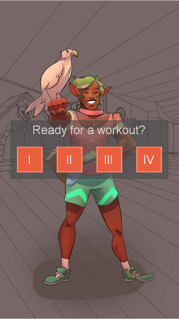

Update 1.1: iOS Builds are Live!
July 26, 2017
Hello alpha testers! Thank you so much for being with us!
We’ve just released a new build of the app, on iOS and Android, and we’re ready for another round of testing.
If you participated in the last round, the first change you might notice is that you now have a choice of workouts. These are all variants of the Ranger’s “Short Run” training archetype. In the future, you’ll have access to Long Runs, Medium Runs, and Cross-Training days, as well.
Whichever workout you choose, you should see that the prompts are randomized, as well. In other words, each time you do workout number 2, you’ll see a different collection of exercises. One time you may have lunges; another time you’ll have high knees or air squats.
We haven’t implemented Education yet, so if you ever see an exercise you don’t know how to do, just try doing something similar, instead. When in doubt, squats and lunges are a good fallback for non-core workouts, and planks or burpees are good substitutes for a core exercise.
We also don’t have side-switching prompts yet! So, if you’re doing a workout like bird-dogs or single leg hops, which only use one side of the body, you should try and switch sides halfway through the set. We’ll put a buzzer in the next build!
While I'm here, I'd like to make a note about pacing, as well. You should expect to be constantly moving for a solid 30 or 40 minutes during this workout, so pace yourself accordingly. If you have to go slowly to keep going, do it. On the other hand, if you feel that you’re not burning enough energy, feel free to speed up! If it helps you to match pace with the avatar, you can do that—but don’t take her too seriously. We’re still working on our animations.
Whatever you do, make sure to listen to your body and trust your training. We recruited you, in part, because you’re experienced athletes we can trust to work with an imperfect product.
One final note about testing. While you’re working out, please think about which features you might like from the app: what information do you want, that you don’t have? What could we help you do? What questions do you have? If you run into a bug, or if the program crashes, then what were you doing at the time? What was happening when the failure occurred?
We’d also love to hear anything about your feelings and your thought process while you’re using the app. Really, there’s nothing we don’t want to hear from you.
If you have any questions or comments, you can get in touch with Karsten or me through phone ( 804-399-6840 or 860-796-1447, respectively) or by email ( wildeuskp@gmail.com and phillip.bascom@gmail.com). We’d love to hear from you.
And of course, whatever you do: have fun!